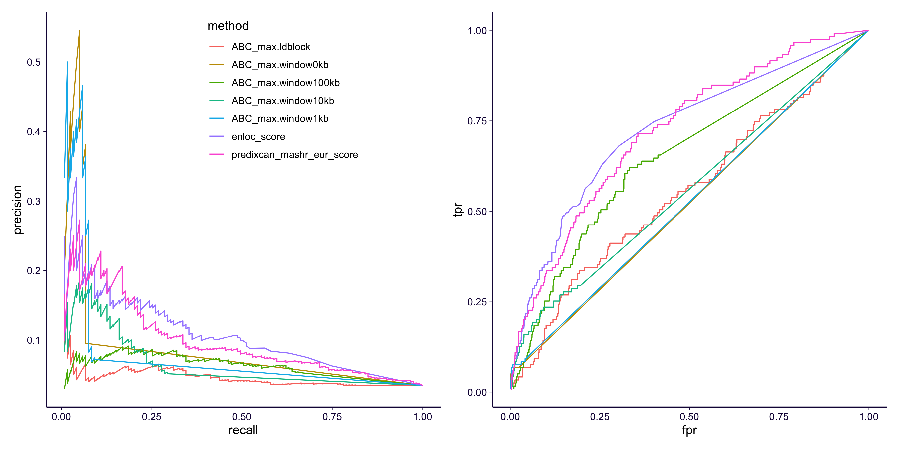
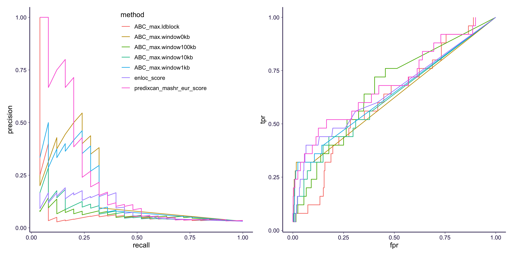
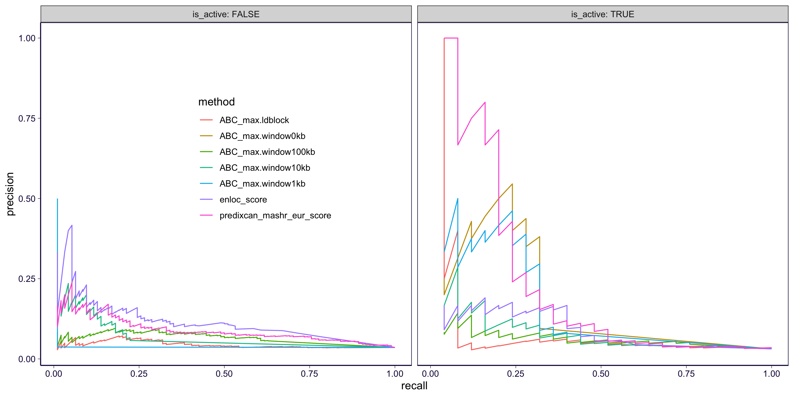
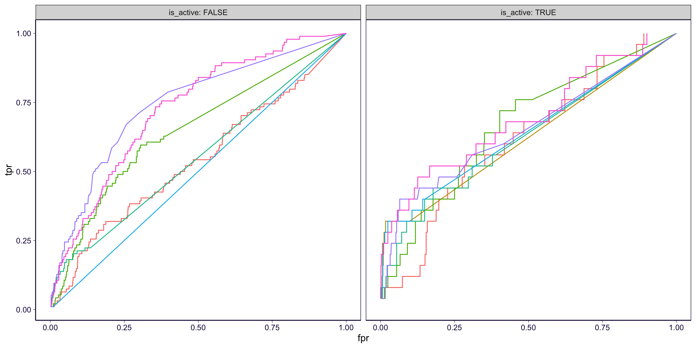
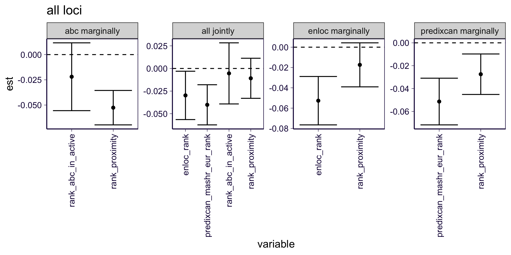
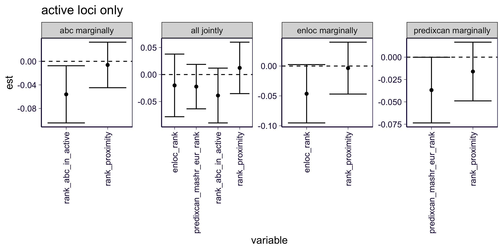

rm(list = ls())
library(ggplot2)
theme_set(theme_bw(base_size = 12))
library(dplyr)
library(reshape2)
library(data.table)
library(patchwork)
options(stringsAsFactors = FALSE)
library(SilverStandardPerformance)
source('https://gist.githubusercontent.com/liangyy/43912b3ecab5d10c89f9d4b2669871c9/raw/3ca651cfa53ffccb8422f432561138a46e93710f/my_ggplot_theme.R')
source('rlib.R')Calculated in ../qsub/gwas_abc/.
gene_annot = read.table('https://bitbucket.org/yanyul/rotation-at-imlab/raw/a4ad9182aac280b1e4b84c62b4473acdcb56866a/data/annotations_gencode_v26.tsv', header = T)
df_all = read.table('https://bitbucket.org/yanyul/rotation-at-imlab/raw/a4ad9182aac280b1e4b84c62b4473acdcb56866a/analysis/fdr_power_specificity/companion_figure_finalized/summary_on_expression_cleanup/logistic-based-test.datamatrix-with-gene-info.OMIM-LD-block-PrediXcan-MASH-EUR.tsv', sep = '\t', header = T)
df_abc = list()
types = c('ldblock', 'window0kb', 'window1kb', 'window10kb', 'window100kb')
for(tt in types) {
df_abc[[tt]] = fread(cmd = paste0('zcat < ~/Desktop/tmp/gwas-abc/gwas_abc/abc_score_table.GTExGWAS-OMIM-', tt, '.tsv.gz'), header = T, sep = '\t', data.table = F)
df_abc[[tt]] = df_abc[[tt]][!is.na(df_abc[[tt]]$ABC_score), ]
}
abc_yaml = yaml::read_yaml('../simple_enrichment_biosamples.yaml')Here we limit the analysis to traits which has enrichment in at least one ABC biosample. And we annotate the genes with ensembl ID and take the maximum score across all biosamples for each locus/trait/gene tuple.
# clean up on traits
traits_to_include = names(abc_yaml)
traits_to_include = traits_to_include[ traits_to_include %in% df_all$trait ]
df_all_clean = df_all %>% filter(trait %in% traits_to_include)
df_abc_max = list()
df_abc_focused = list()
for(tt in types) {
# annotate ABC table with ensembl ID
df_abc[[tt]] = inner_join(df_abc[[tt]], gene_annot %>% select(gene_name, gene_id), by = c('Mapped_gene' = 'gene_name'))
# obtain ABC-Max score
df_abc_max[[tt]] = df_abc[[tt]] %>% group_by(snpid, trait, gene_id) %>% summarize(ABC_max = max(ABC_score, na.rm = T)) %>% ungroup()
# merge all
df_all_clean = left_join(df_all_clean, df_abc_max[[tt]] %>% select(snpid, trait, gene_id, ABC_max), by = c('lead_var' = 'snpid', 'trait', 'gene' = 'gene_id'))
new_name = paste0('ABC_max', '.', tt)
colnames(df_all_clean)[ncol(df_all_clean)] = new_name
df_all_clean[[new_name]][ is.na(df_all_clean[[new_name]])] = 0
df_abc_focused[[tt]] = df_all_clean[ paste(df_all_clean$trait, df_all_clean$lead_var) %in% paste(df_abc_max[[tt]]$trait, df_abc_max[[tt]]$snpid), ]
}df_score = df_all_clean %>% select(lead_var, trait, gene, is_omim, predixcan_mashr_eur_score, enloc_score, contains("ABC_max"))
# df_score %>% head %>% pander::pander()
df_score = df_score %>% mutate(pair = paste(trait, gene))
# pr and roc all loci
scores = c('predixcan_mashr_eur_score', 'enloc_score', paste0('ABC_max.', types))
coll = list()
coll2 = list()
for(ss in scores) {
pp = gen_fdr_power_curve(df_score$pair[df_score$is_omim], df_score$pair, df_score[[ss]])
coll[[length(coll) + 1]] = pp[-nrow(pp), ] %>% mutate(method = ss)
rr = gen_roc_curve(df_score$pair[df_score$is_omim], df_score$pair, df_score[[ss]])
coll2[[length(coll2) + 1]] = rr[-nrow(rr), ] %>% mutate(method = ss)
}
df_pr = do.call(rbind, coll)
df_roc = do.call(rbind, coll2)
p1 = df_pr %>% ggplot() +
geom_path(aes(x = recall, y = precision, color = method)) +
theme(legend.position = c(0.6, 0.8)) +
th
p2 = df_roc %>% ggplot() +
geom_path(aes(x = fpr, y = tpr, color = method)) +
theme(legend.position = "none") +
th
ggsave('../output/abc_in_omim.png', p1 + p2, width = 12, height = 6)
Take-away:
df_limit = df_abc_focused$window0kb %>% select(gene, lead_var, trait)
df_limit = inner_join(df_limit, df_score, by = c('gene', 'lead_var', 'trait'))
scores = c('predixcan_mashr_eur_score', 'enloc_score', paste0('ABC_max.', types))
coll = list()
coll2 = list()
for(ss in scores) {
pp = gen_fdr_power_curve(df_limit$pair[df_limit$is_omim], df_limit$pair, df_limit[[ss]])
coll[[length(coll) + 1]] = pp[-nrow(pp), ] %>% mutate(method = ss)
rr = gen_roc_curve(df_limit$pair[df_limit$is_omim], df_limit$pair, df_limit[[ss]])
coll2[[length(coll2) + 1]] = rr[-nrow(rr), ] %>% mutate(method = ss)
}
df_pr = do.call(rbind, coll)
df_roc = do.call(rbind, coll2)
p1 = df_pr %>% ggplot() +
geom_path(aes(x = recall, y = precision, color = method)) +
theme(legend.position = c(0.6, 0.8)) +
th
p2 = df_roc %>% ggplot() +
geom_path(aes(x = fpr, y = tpr, color = method)) +
theme(legend.position = "none") +
th
ggsave('../output/abc_in_omim_loci_in_enhancer.png', p1 + p2, width = 12, height = 6)
Take-away:
Now, takeing together.
df_limit = df_abc_focused$window0kb %>% select(gene, lead_var, trait)
df_score2 = left_join(df_score, df_limit %>% select(gene, lead_var, trait) %>% mutate(is_active = T), by = c('gene', 'lead_var', 'trait'))
df_score2$is_active[is.na(df_score2$is_active)] = FALSE
scores = c('predixcan_mashr_eur_score', 'enloc_score', paste0('ABC_max.', types))
coll = list()
coll2 = list()
for(ss in scores) {
for(ll in c(T, F)) {
tmp = df_score2 %>% filter(is_active == ll)
pp = gen_fdr_power_curve(tmp$pair[tmp$is_omim], tmp$pair, tmp[[ss]])
coll[[length(coll) + 1]] = pp[-nrow(pp), ] %>% mutate(method = ss, is_active = ll)
rr = gen_roc_curve(tmp$pair[tmp$is_omim], tmp$pair, tmp[[ss]])
coll2[[length(coll2) + 1]] = rr[-nrow(rr), ] %>% mutate(method = ss, is_active = ll)
}
}
df_pr = do.call(rbind, coll)
df_roc = do.call(rbind, coll2)
p1 = df_pr %>% ggplot() +
geom_path(aes(x = recall, y = precision, color = method)) +
theme(legend.position = c(0.3, 0.6)) +
facet_wrap(~is_active, labeller = label_both) +
th2
p2 = df_roc %>% ggplot() +
geom_path(aes(x = fpr, y = tpr, color = method)) +
theme(legend.position = "none") +
facet_wrap(~is_active, labeller = label_both) +
th2
ggsave('../output/abc_in_omim_stratified_pr.png', p1, width = 12, height = 6)
ggsave('../output/abc_in_omim_stratified_roc.png', p2, width = 12, height = 6) 
Take-away:
Here we want to combine PrediXcan ranking, enloc ranking, and ABC ranking (within a locus) and see if them have independent contribution. Let’s focus on the most stringent definition of ABC score, namely window size = 0. We consider all loci or the ones overlapping with active enhancer.
The non-active locus, rank of ABC score is manully set to 0 which gives rank_abc_in_active. And we introduce another variable to take care of the baseline in non-active loci (is_active). The latter won’t be needed when limiting to active loci.
df_limit = df_all_clean
df_limit$is_active = 0
df_limit$is_active[
paste(df_limit$lead_var, df_limit$trait) %in% paste(df_abc_focused$window0kb$lead_var, df_abc_focused$window0kb$trait)
] = 1
df_limit = df_limit %>% group_by(trait, lead_var) %>% mutate(rank_abc = rank(-ABC_max.window0kb)) %>% ungroup()
df_limit$rank_abc_in_active = df_limit$rank_abc
df_limit$rank_abc_in_active[df_limit$is_active == 0] = 0
my_logistic = function(ss, df) {
form = paste0('is_omim ~ ', paste0(ss, collapse = ' + '))
mod = glm(as.formula(form), family = binomial(), data = df)
out = as.data.frame(summary(mod)$coefficients)
out = out[rownames(out) %in% ss, ]
out$variable = rownames(out)
colnames(out)[1:4] = c('est', 'se', 'zval', 'pval')
out
}
# include all loci
# we consider: 1. joint model; 2. marginal model (always go with proximity)
scores = list(
abc = c('is_active', 'rank_abc_in_active'),
predixcan = 'predixcan_mashr_eur_rank',
enloc = 'enloc_rank',
proximity = 'rank_proximity'
)
mod_list = list()
mod_list[[length(mod_list) + 1]] = my_logistic(unlist(scores), df_limit) %>% mutate(test = 'all jointly')
for(n in names(scores)) {
if(n == 'proximity') {
next
}
mod_list[[length(mod_list) + 1]] = my_logistic(c(scores[[n]], scores$proximity), df_limit) %>% mutate(test = paste0(n, ' marginally'))
}
df_all = do.call(rbind, mod_list)
p = df_all %>% filter(variable != 'is_active') %>%
ggplot() + geom_point(aes(x = variable, y = est)) +
geom_errorbar(aes(x = variable, ymin = est - 1.96 * se, ymax = est + 1.96 * se)) +
facet_wrap(~test, scales = 'free', nrow = 1) +
geom_hline(yintercept = 0, linetype = 2) +
theme(axis.text.x = element_text(angle = 90, hjust = 1, vjust = 0.5)) +
th2 + ggtitle('all loci')
ggsave('../output/abc_in_omim_logistic_all.png', p, width = 8, height = 4)
# focus on active locus
scores = list(
abc = 'rank_abc_in_active', # no need to include is_active anymore
predixcan = 'predixcan_mashr_eur_rank',
enloc = 'enloc_rank',
proximity = 'rank_proximity'
)
df_limit_active = df_limit %>% filter(is_active == 1)
mod_list = list()
mod_list[[length(mod_list) + 1]] = my_logistic(unlist(scores), df_limit_active) %>% mutate(test = 'all jointly')
for(n in names(scores)) {
if(n == 'proximity') {
next
}
mod_list[[length(mod_list) + 1]] = my_logistic(c(scores[[n]], scores$proximity), df_limit_active) %>% mutate(test = paste0(n, ' marginally'))
}
df_active = do.call(rbind, mod_list)
p = df_active %>% filter(variable != 'is_active') %>%
ggplot() + geom_point(aes(x = variable, y = est)) +
geom_errorbar(aes(x = variable, ymin = est - 1.96 * se, ymax = est + 1.96 * se)) +
facet_wrap(~test, scales = 'free', nrow = 1) +
geom_hline(yintercept = 0, linetype = 2) +
theme(axis.text.x = element_text(angle = 90, hjust = 1, vjust = 0.5)) +
th2 + ggtitle('active loci only')
ggsave('../output/abc_in_omim_logistic_active.png', p, width = 8, height = 4)

Take-away: